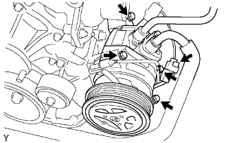

CẢM BIẾN VỊ TRÍ TRỤC KHUỶU > THÁO RA |
| 1. NGẮT CÁP ÂM RA KHỎI CỰC ÂM ẮC QUY |
| 2. THÁO ĐAI DẪN ĐỘNG |
 |
Dùng một chi tiết dạng lục giác như chỉ ra với mũi tên trong hình vẽ để dịch chuyển puli căng đai xuống dưới để giảm độ căng đai dẫn động. Sau đó tháo dây đai dẫn động.
| 3. THÁO CỤM MÁY NÉN ĐIỀU HOÀ |
 |
Tháo 2 bu lông và ngắt ống hút ra khỏi động cơ.
|  |
Ngắt giắc nối của máy nén.
Tháo 4 bulông và tháo máy nén ra khỏi động cơ.
Đỡ máy nén điều hoà một cách chắc chắn.
| 4. THÁO GIÁ BẮT MÁY NÉN NO.1 |
 |
Tháo 5 bulông và giá bắt.
| 5. THÁO CẢM BIẾN VỊ TRÍ TRỤC KHUỶU |
 |
Ngắt giắc của cảm biến.
Ngắt giắc nối ra khỏi giá bắt giắc.
Tháo kẹp dây điện.
Tháo bulông và cảm biến.